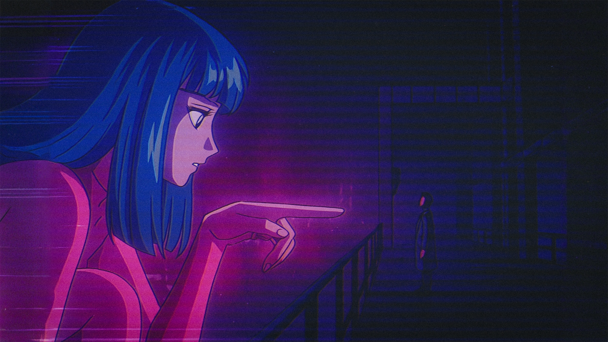
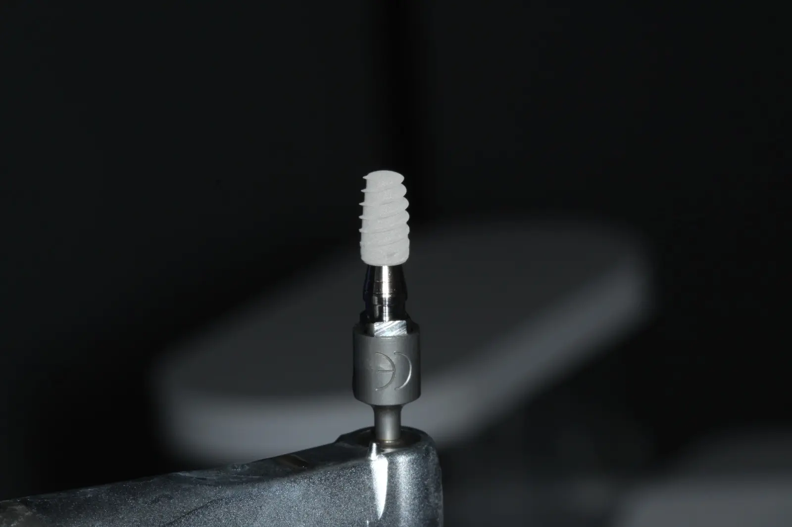

Implantología Quirúrgica
Colocación de implantes oseointegrados con planificación 3D preoperatoria.


Fotos próximamente
Implantología Quirúrgica
Implante unitario — sector anterior
Colocación de implante oseointegrado en zona 21 con guía quirúrgica digital. Planificación tomográfica preoperatoria. Seguimiento clínico y radiológico a los 6 meses.